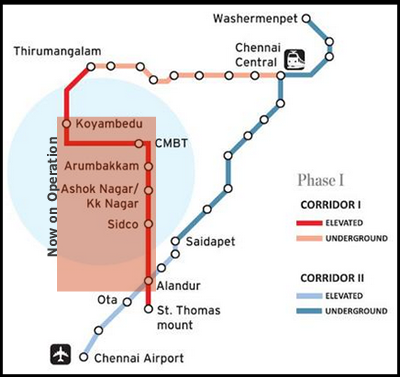

CHENNAI Metro Rail Project aims at providing the people of Chennai with a fast, reliable, convenient, efficient, modern and economical mode of public transport, which is properly integrated with other forms of public and private transport including buses, sub-urban trains and MRTS.
CMRL designed to implement two corridors which are given below:
Corridor-1: Washermenpet – Broadway (Prakasam Road) – Chennai Central Station – Rippon Building – along Cooum River – Government Estate – Tarapore Towers – Spencers – Gemini – Anna Salai – Saidapet – Guindy – Chennai Airport.
Corridor-2: Chennai Central – along EVR Periyar Salai – Vepery – Kilpauk Medical College – Aminjikarai – Shenoy Nagar – Annanagar East – Anna Nagar 2nd avenue – Tirumangalam – Koyambedu – CMBT – along Inner Ring Road – Vadapalani – Ashok Nagar – SIDCO – Alandur – St. Thomas Mount.
The portions of Corridor-1 with a length of 14.3 kms. from Washermanpet to Saidapet, and Corridor-2 with a length of 9.7 kms. from Chennai Central to Anna Nagar 2nd Avenue will be underground and the remainder elevated. The alignment and stations given above are tentative and subject to change during detailed design and execution.